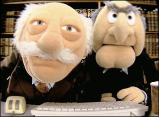

My Thoughts on Pair Programming in Phase 0 of Dev Bootcamp
September 7, 2014
Since I began Phase 0 of Dev Bootcamp I've paired several times with students to complete challenges. Peer pairing, and giving and receiving feedback are very much a part of the credo of Dev Bootcamp. Through the process I've learned a lot about myself.
Pairing has been a valuable tool for me to learn about myself. I do admit that I don't like to rely on pairing for learning and that I've found pairing difficult. I think I learn best by thinking to myself and going at my own pace. I prefer quiet while trying to understand something rather than talking. Sometimes pairing can be fun, but other time I felt flustered especially if the material is challenging or the partner is not a very good communicator. At times there will be situations where I'm still trying to understand the instructions and my partner will be a few steps ahead of me, talking and interrupting my thought process. This is not always the case though. There have been some pairing sessions where I felt like I was ahead of my pair.
A common theme in the feedback I've received from other students regarding pairing with me is that I need to speak up more, and express my thoughts. My feedback was rated lowest in expressing my thoughts clearly. This is because I'm introverted and I tend to think in order to talk, whereas extroverted personalities may be impatient with this style.
Writing feedback is pretty straightforward for me. I try not to overthink and write what my first instincts are. So far I have not had any pairing experiences that I would deem bad. Most of the feedback I have given was favorable. In some cases I felt my pair was great and I couldn't provide any critical feedback. For me the most difficult thing with writing feedback to others is finding something critical and how to phrase it. Naturally I dislike criticizing people and sometimes I felt my partner contributed more to the challenge and I was out of place to criticize them.
Overall, the feedback I received was helpful because it helped me realize a pattern that was going on. Mainly that I do not speak up enough and express my thoughts clearly. I will try to improve on this. Also, I think it will be useful for me to prepare ahead of time for challenges. This may mean reading the instructions and attempting the challenge before pairing. By doing this I can prevent becoming flustered or feeling like I'm holding us back when we are actually pairing.